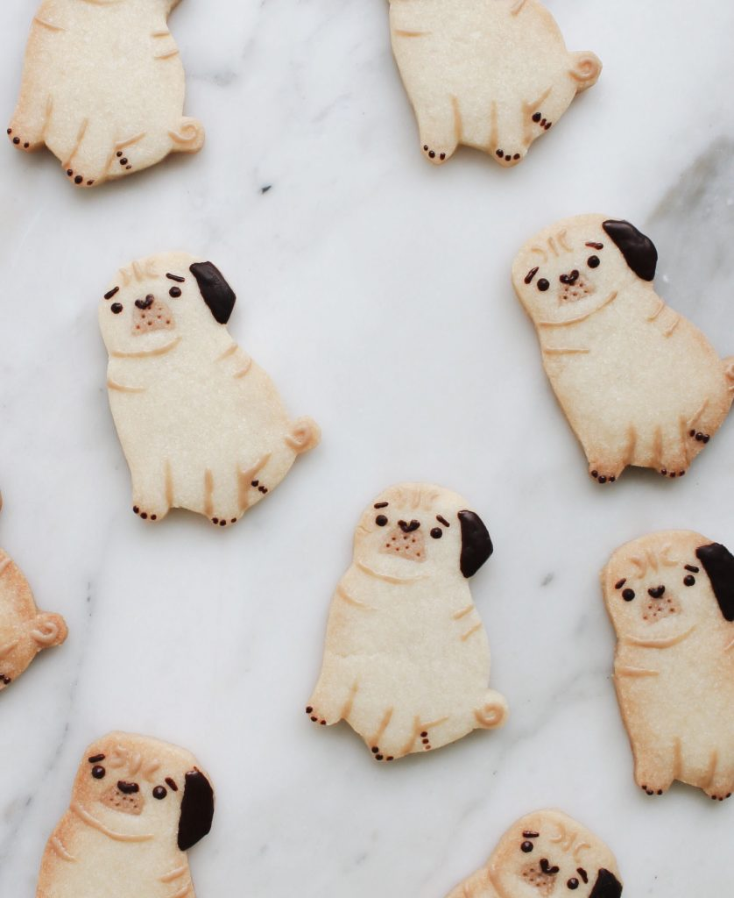

Pug cookies
Servings 24 | Prep 10m | Cook 8-10m

Description
These little Pug Cookies are just about the cutest cookies we've ever seen! Perfect for a birthday party or anytime you'd like some pug love into your day!
Ingredients
- 1 cup Unbleached White All-Purpose Flour
- 1/2 cup Butter unsalted, room temperature
- 1/4 cup Sugar
- 1/2 tsp Vanilla Extract
- Cocoa Powder pinch
- Dark Chocolate
- White Chocolate
Steps
- Cream together room temperature butter and sugar in a bowl. Once the butter sugar mixture is done, add vanilla extract.
- Mix in the flour until a dough-like consistency starts to form.
- On a well floured surface, roll the cookie dough with a rolling pin until it is 1/8 inches thick.
- Using a pug cookie cutter, or paper template, cut out shapes in the cookie dough. Cut out a semi-circle hole for the mouth.
- Take the scraps of cookie dough and add a pinch of cocoa powder until a light brown color is achieved. On a well floured surface, roll the cookie dough with a rolling pin until it is 1/8 inches thick. Cut out semi-circles and place inside the hole previously cut out.
- Use a toothpick to poke holes in the light brown semi-circle cookie dough.
- Place the cookies on parchment paper 2” apart and refrigerate for 20 minutes.
- Bake in preheated oven at 325ºF for 8-10 minutes or until bottoms are lightly golden. Remove cookies from baking sheet and cool on wire racks.
- Microwave dark chocolate for 30 seconds until there are no lumps. Use a toothpick to paint the details on the cookies.
- Microwave white chocolate for 30 seconds until there are no lumps. Add a small amount of dark chocolate to get a shade of brown just lighter than milk chocolate. Use a toothpick to paint the details on the cookies.
- Let chocolate harden before eating.
Return to index